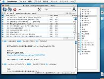
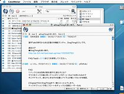

ペイン（pane）とは、何かを表示する領域のことを指しています。2ペイン、3ペインとは、一つのウインドウが2つ、または3つの領域に区切られていることを意味しています。
3ペイン表示は、一つのウインドウでスレッド一覧、スレッドの内容、掲示板リストを一覧できます（下図）。例えば、「マカー用。」や「Ahyazilla」、「Mail」などのインターフェースと似ています：

2ペイン表示では、スレッドの内容を別のウインドウで開くことになります。このメリットは同時にいくつものスレッドの内容を表示させておくことができる点です。例えば、「MacMoe」や「Fuuun」などのインターフェースと似ています：

CocoMonar をインストールした直後は3ペイン状態の表示になっています。2ペインと3ペインのどちらを使うかは完全に個人の好みの問題ですから、迷っている場合は両方のモードを試してみることをおすすめします。
ヒント：2ペイン表示のとき、スレッドを選択して return キーを押してスレッドを表示させたいことがあります。そのためには、CocoMonar の設定ファイルをカスタマイズする必要があります。方法については以下のページを参照してください：
CocoMonar - カスタマイズ - 上級
http://homepage.mac.com/tsawada2/customize_plist.html